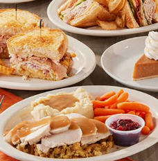
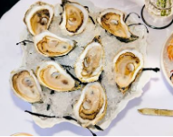
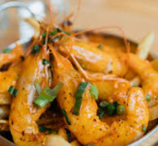
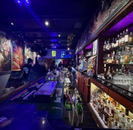
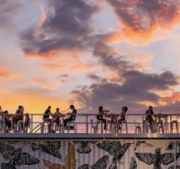

Eat & Drink
Isle of Palms Bachelorette Restaurants and Bars for Big Groups
Feeding twelve people on a small island takes planning. These are the spots that handle bridal groups well, from brunch to last call.
Feeding twelve people on a small island takes planning. These are the spots that handle bridal groups well, from brunch to last call.

Isle of Palms has a short list of restaurants compared to downtown Charleston, which makes reservations the deciding factor. Book the big group dinner first, then fill the other meals around it. Many places cap online reservations at six or eight people, so call ahead for anything larger and ask about a set menu or private section.
Long Island Cafe on Palm Boulevard has been an island fixture since 1986 and turns out reliable seafood in a relaxed room that suits a bachelorette dinner without feeling stiff. For a dressier night with an ocean view, Coda del Pesce on Ocean Boulevard serves Italian-style coastal seafood and house-made pasta with a strong Italian wine list. Acme Lowcountry Kitchen near Front Beach is the casual option, known for shrimp and grits and big breakfast plates.


For drinks with a view, Islander 71 at the marina has indoor seating, a rooftop bar and a deck facing the Intracoastal Waterway, which makes it a natural post-boat stop. On Front Beach, Coconut Joe's Beach Grill has an oceanfront deck and live music in season, and The Windjammer, a short walk away, is the island's long-running beach bar and live music venue. Just off the Front Beach strip, The Dinghy is a laid-back pub that works for a late bite.

The Refuge at the island end of the IOP Connector serves breakfast, brunch and dinner in a polished dining room with a coffee shop attached, which makes it the easiest sit-down brunch on the island. For pizza night with no stress, IOPizza Co. on Ocean Boulevard has a patio and handles takeout for the rental.

Cross Breach Inlet and Sullivan's Island adds a dense cluster of popular spots. The Obstinate Daughter is the reservation everyone wants, Poe's Tavern is the go-to for burgers and a crowd, Home Team BBQ has a lively patio, and Dunleavy's Pub is the classic neighborhood bar. The Boathouse at Breach Inlet sits right on the water between the two islands.
Plan rides for any night out. Rideshare works on the island but can be slow late at night, so line up a driver or an LSV for short trips. For the full weekend, including where to stay and a sample itinerary, see the Isle of Palms bachelorette party guide.